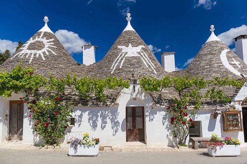

Cika Rahamdani
Nama saya Cika Rahmadani biasa dipanggil cika,tahun lahir 22-Oktober-2006 Tempat tinggal Muaro Paiti kapur Ix, saya duduk di SD Pada tahun 2013-2019 , pada tahun 2019-2022 saya duduk di bangku SMP. setelah menyelesaikan pendidikan SMP saya masuk SMAN 2 kapur IX pada tahun 2022-2025, 2025 dan sekarang saya berada di universitas Mahaputra Muhammad Yamin solok. pengalaman organisasi saya di universitas mahaputra muhammad yamin yaitu mengikuti HMJ-MI, dan pengalaman saya sebelumnya pas SMA saya sering ikut lomba atletik lari sprin. Cita-cita saya sebelumnya ingin menjadi Engineering,Hobi saya menari,badminton,bernyanyi .
